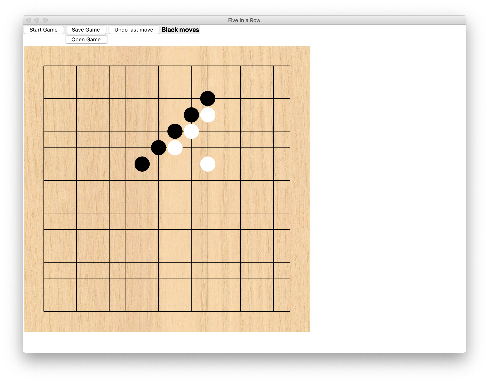

Five-in-a-row python game
Download link: Click here to download
Download link (without sound):
This simple game was created for studying purposes and does not have a AI. You can play by yourself or with a friend and see who is better at the Five-in-a-row game.
Features
-
Unfinished games can be saved on a file.
-
Saved games can be reopened and players can continue to play.
-
There is a sound played whenever a chess is placed. (not available in the “without sound” version)
-
Realistic chess board.
-
There is a status bar which shows whether it’s black or white’s turn.
-
Players can reset a game by pressing the “Start Game” button.
-
Players can undo a move by pressing the “Undo last move” button.
-
Whoever gets five of the same colored chess in a row will win the game.
How to install/run/play the game:
-
Make sure your computer has python3 installed. (Download at python.org)
-
There are two version for the game, the one without sound is simpler to install and play.
-
If you would like to have sound, open your computer terminal and run the following command, python3 -m pip install simpleaudio.
-
When finished with the above procedures, type in the command below to run the game, python3 five_in_a_row.py.
This is my email
